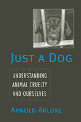

<body bgcolor="#FFFFFF" text="#000000" link="#0000FF" vlink="#CC0000" alink="#CC0000"><center><hr width="350" size="1" align="center" noshade>How can we make sense of acts of cruelty towards animals?<hr width="350" size="1" align="center" noshade><p><a href="https://cdcshoppingcart.uchicago.edu/Cart/ChicagoBook.aspx?ISBN=9781592134717&&PRESS=temple" target="_top">Buy this book!</a> | <a href="https://cdcshoppingcart.uchicago.edu/Cart/Cart.aspx?PRESS=temple" target="_top">View Cart</a> | <a href="https://cdcshoppingcart.uchicago.edu/Cart/Cart.aspx?PRESS=temple" target="_top">Check Out</a></p><p></p></center><!--none//--><h1>Just a Dog</h1>
<H2>Understanding Animal Cruelty and Ourselves</H2>
<h3>Arnold Arluke</h3>
<P>cloth 1-59213-471-8 $89.50, Jun 06, <FONT COLOR=#990033>Available</FONT>
<br>paper 1-59213-472-6 $29.95, Jun 06, <FONT COLOR=#990033>Available</FONT>
<br>Electronic Book 1-59213-473-4 $29.95 <FONT COLOR=#990033>Available</FONT>
<BR> 232 pp
6x9
</P><BLOCKQUOTE><I>"</i>Just a Dog<i> is the first truly objective sociological study of animal cruelty and its human face. In this pioneering book, Arluke has combined scholarly rigor, compassion, and sensitivity to produce an insightful and highly readable treatment of a topic that many would rather ignore."</i>
<br>&#151<b>James A. Serpell</b>, Professor of Animal Welfare, University of Pennsylvania<i></I></BLOCKQUOTE>
<p>Psychiatrists define cruelty to animals as a psychological problem or personality disorder. Legally, animal cruelty is described by a list of behaviors. In <i>Just a Dog</i>, Arnold Arluke argues that our current constructs of animal cruelty are decontextualized&#151imposed without regard to the experience of the groups committing the act. Yet those who engage in animal cruelty have their own understandings of their actions and of themselves as actors. In this fascinating book, Arluke probes those understandings and reveals the surprising complexities
of our relationships with animals.
<p><i>Just a Dog</i> draws from interviews with more than 250 people, including humane agents who enforce cruelty laws, college students who tell stories of childhood abuse of animals, hoarders who chronically neglect the welfare of many animals, shelter workers who cope with the ethics of euthanizing animals, and public relations experts who use incidents of animal cruelty for fundraising purposes. Through these case studies, Arluke shows how the meaning of "cruelty" reflects and helps to create identities and ideologies.
<BR>&nbsp;<h2>Excerpt</h2><P>Excerpt available at <a href="http://www.temple.edu/tempress">www.temple.edu/tempress</a></p>
<BR>&nbsp;<h2>Reviews</h2>
<p><i>"Getting right to the heart of the matter, Arnold Arluke dove straight into the lives of many of us ... those who care for animals, and in some cases, those who don't. And the dive was deep ... </i>Just a Dog<i> is the first of its kind&#151;a social scientist's exploration into the inner circle of the individuals whose lives are inextricably linked in intersecting and differing facets of animal cruelty and animal welfare and animal protection."</i>
<br>&#151<b>Carter Luke</b>, Executive Vice President, Massachusetts Society for the Prevention of Cruelty to Animals
<p><i>"Professor Arluke has produced a number of very insightful analyses of the human-animal bond and is one of the foremost authorities in the world on the topic. His views have produced controversy in the past, but this book, which examines how different 'practitioner' groups view animal cruelty, is likely to arouse more passion than any of his earlier volumes. This is a provocative and thoughtful book on a subject that many readers will find rather disturbing."</i>
<br>&#151<b>Andrew N. Rowan</b>, PhD, Executive Vice President of The Humane Society of the U.S.
<p><i>"Arluke (</i><a href="1151_reg.html" target="_top">Regarding Animals</a><i>), an authority on animal cruelty, believes that in order to formulate effective programs and policies to combat such behavior, society must have an in-depth understanding of why people mistreat or neglect animals and of the cultural and social factors that encourage abuse. Wisely, the author keeps passages describing specific examples of cruelty to a minimum, and he refrains from making moral judgments."</i>
<br>&#151<b><i>Publishers Weekly</i></b>
<p><i>"Arluke explores here the definition of animal cruelty and the psychology of those who deal with it or perpetrate it.... Arluke's descriptions are graphic and heart-wrenching... [T]his scholarly work is recommended."</i>
<br>&#151;<b><i>Library Journal</i></b>
<p><i>"This is an important and thoughtful book&#151;though I will remember a few scenes described in it with horror for some time."</i>
<br>&#151;<b><i>BBC Wildlife</i></b>
<p><i>"Arluke has produced...[an] expertly researched study of animal cruelty and its human connections&#8212;
those who care for animals as well as those who commit unspeakably cruel acts against them. Arluke is perceptive and mostly insightful in this comprehensive study....This is a significant and crucial achievement."</i> <br>&#151;<b><i>Abolitionist-online</i></b>
<p><i>"</i>Just a Dog<i> by Arnold Arluke is not just another book on animal cruelty&#8212;
far from it. [A] well-written analysis...sociological in the best sense of the word...[T]his study contributes to an understanding not just of animal cruelty, but of how animal cruelty, its participants, and their interpretations of, and responses to, cruelty tell us much about ourselves as individuals, as well as our relationships with others, both human and animal."</i> <br>&#151;<b><i>Anthrozoos</i></b>
<p><i>"Through courageous research Arluke set aside his judgment to explore how abusers see their behavior. He has given us a sociological understanding of animal abuse that recognizes the situational quality of cruelty and its ability to shape identity....</i>In Just a Dog<i>, Arnold Arluke uses cruelty to raise questions about what it means to be human. He also adds to our understanding of the complex and conflicting ways we humans regard other animals."</i>
<br>&#151;<b><i>Contemporary Sociology</i></b>
<p><i>"[T]he book is useful reading for anyone interested in how our society currently deals with cruelty toward domestic animals….[A] valuable contribution to the literature on the treatment of animals."</i><br>&#151;<b><i>Metapsychology Online</i></b>
<p><i>"Arluke provides a methodological blueprint for those who wish to move the study of human-animal relationships from the margins of social enquiry to the center. In Just a Dog he has produced a nonsensational rendering of a difficult and complex subject that deserves to be read by all students of these relationships…. He approaches [cruelty to animals] with sensitivity."</i> <br>&#151;<b><i>Current Anthropology</i></b>
<BR>&nbsp;<P><p>&nbsp;&nbsp;<font color="#3152A5">Also available in e-book</font></p></P><BR>&nbsp;<br>
<h2>Contents</h2><P>
<p>Acknowledgments
<br>Introduction: Just a Dog
<br>1. Agents: Feigning Authority
<br>2. Adolescents: Appropriating Adulthood
<br>3. Hoarders: Shoring Up Self
<br>4. Shelter Workers: Finding Authenticity
<br>5. Marketers: Celebrating Community
<br>Conclusion: Cruelty Is Good to Think
<br>References
<br>Index
</P><BR>&nbsp;<H2>About the Author(s)</H2>
<P><b>Arnold Arluke</b> is Professor of Sociology and Anthropology at Northeastern University and Senior Scholar at Tufts University Center for Animals and Public Policy. He has published over 70 articles and eight books, including <i><a href="1151_reg.html" target="_top">Regarding Animals</a></i> (Temple), <i>Brute Force: Animal Police and the Challenge of Cruelty</i>, and <i>The Sacrifice: How Scientific Experiments Transform Animals and People</i>. He also edits with Clinton Sanders the <i><a href="../animals.html" target="_top">Animals, Culture, and Society</a></i> series at Temple University Press.</P>
<BR><H2>Subject Categories</H2>
<p><A HREF="/tempress/sociology.html" TARGET="_top">Sociology</a>
<BR><A HREF="/tempress/animal_soc.html" TARGET="_top">Animals and Society</a>
<BR><A HREF="/tempress/anthropology.html" TARGET="_top">Anthropology</a>
</p>
<BR><h2 class="inpageheading">In the series</H2>
<P><I><a href="http://www.temple.edu/tempress/animals.html" onMouseOver="window.status='Click for other books in this series!'; return true;" onMouseOut="window.status=''; return true;" target="_top">Animals, Culture, and Society</a></i>, edited by Arnold Arluke and Clinton R. Sanders.
</p><p><I>Animals, Culture, and Society</I>, edited by Arnold Arluke and Clinton R. Sanders, is concerned with probing the complex and contradictory human-animal relationship through the publication of accessible books that consider the place of animals in our culture, our literature, our society, and our homes.</p>
<p align="center"><a href="https://cdcshoppingcart.uchicago.edu/Cart/ChicagoBook.aspx?ISBN=9781592134717&&PRESS=temple" target="_top">Buy this book!</a> | <a href="https://cdcshoppingcart.uchicago.edu/Cart/Cart.aspx?PRESS=temple" target="_top">View Cart</a> | <a href="https://cdcshoppingcart.uchicago.edu/Cart/Cart.aspx?PRESS=temple" target="_top">Check Out</a></p><p><font face="Arial" size="1"><a href="copyright.html" onMouseOver="window.status='Web Copyright Policy';return true;" onMouseOut="window.status=''" title="Web Copyright Policy">&copy;</a> 2015 <a href="http://www.temple.edu" target="new" onMouseOver="window.status='Link to Temple University home page';return true;" onMouseOut="window.status=''" title="Link to Temple University home page">Temple University</a>. All Rights Reserved. http://www.temple.edu/tempress/titles/1837_reg.html</font></p>